Курс повышения квалификации Академии сметного дела · программа 2026
Снижайте риск ошибок при составлении и проверке смет
Курс повышения квалификации для специалистов сметного дела, которые составляют или проверяют сметы
Разбирайте изменения правил вместе с экспертами: вы знаете, что изменилось в ценообразовании и где это отражается в вашей смете, и не остаётесь один на один с потоком приказов.
Работайте спокойно — вы знаете, где что искать
Знания по полочкам — от модуля к модулю, пробелы закрываются
Удостоверение на своё имя — и знания, которые применяете в работе
«Стала допускать намного меньше ошибок при составлении или корректировке смет.»Выпускник курса повышения квалификации
«Добавилось уверенности, знания систематизировались, закрылись пробелы.»Выпускник курса повышения квалификации
Заявка — это разговор, а не оплата: вам позвонят из Академии, ответят на вопросы и помогут выбрать. Хотите сначала посмотреть — начните учиться бесплатно: 5 дней пробного доступа.
Приказ Минстроя № 421/пр: что он меняет в вашей смете, разбираем по модулям01
Методики меняются — не успеваете отследить
Приказы и методики выходят один за другим, и непонятно, что из этого меняет вашу смету.
Вы получите: изменения разобраны по модулям вместе с экспертами — вы знаете, что изменилось и где это в вашей смете.
«Стала более уверенно разбираться в изменениях, знаю где можно узнать и посмотреть что-то важное для меня»Выпускник курса повышения квалификации
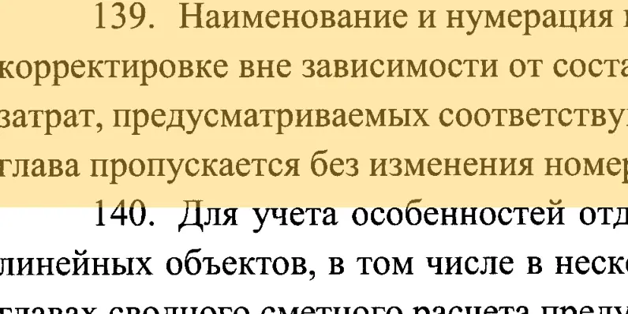
основание
Пункт 139 Методики № 421/пр — документ и пункт, на которые можно сослаться02
Правило знаете, а откуда оно — нет
Делаете по привычке или по совету коллеги, а сослаться не на что.
Вы получите: к норме, цене и коэффициенту — документ и пункт, на который можно сослаться.
«Теперь чувствую себя увереннее, так как знаю не только правила, но и могу сослаться на нормативный документ»Выпускник курса повышения квалификации
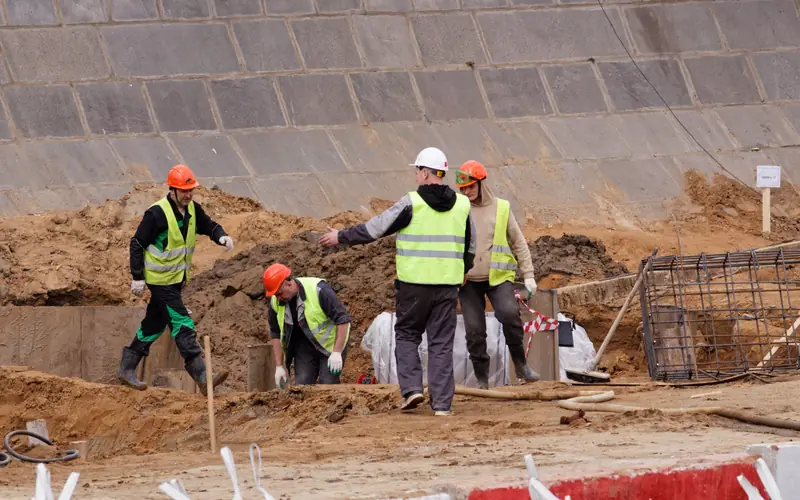
Разговор на объекте: отвечаете по существу, со ссылкой на методику03
Вопрос подрядчика застаёт врасплох
Ответ звучит неуверенно, а с чужой сметой приходится соглашаться — и терять в цене.
Вы получите: отвечаете по существу, со ссылкой на методику, и идёте к экспертизе, понимая документы и новые правила.
«Уверенно отвечаю на вопросы подрядчиков, могу обосновать свои ответы с ссылкой на Методики.»Выпускник курса повышения квалификации
Коллега спросил — вы находите разъяснение в нормативном документе04
Коллеги отвечают не на все вопросы
Спросить не у кого, а искать самому долго — и не всегда верно.
Вы получите: находите разъяснение в нормативной документации сами. Выпускники рассказывают, что к ним стали обращаться коллеги.
«Ко мне стали обращаться коллеги с просьбой найти разъяснения в нормативной документации»Выпускник курса повышения квалификации
После перерыва — по порядку, модуль за модулем, в своём темпе05
Возвращаетесь после перерыва
Декрет, другая сфера, переезд — а правила за это время изменились.
Вы получите: закрываете пробелы по порядку, от модуля к модулю, и возвращаетесь к работе с обновлёнными знаниями.
«перерыв в работе по специальности был 15 лет, срочно нужно было освежить знания, академия в этом мне помогла и продолжает помогать.»Выпускник курса повышения квалификации
Узнали себя?
Оставьте заявку — менеджер покажет модуль и урок под вашу задачу. Если в курсе этого нет, скажем прямо.
Знаете не только правило, но и документ, на который можно сослаться: норма, цена, коэффициент — документ и пункт.
Не «так принято», а пункт документа
Было
«На каком основании?» — и ответ подрядчику или экспертизе получается невнятным.
→
Стало
Отвечаете подрядчику по существу, со ссылкой на методику, к экспертизе идёте, понимая документы и новые правила.
Спрашивают подрядчик и экспертиза — у вас есть основание
Было
Чужую смету приходится принимать как есть — не хватает аргументов.
→
Стало
Проверяете сметы проектировщиков и подрядчиков, видите слабые места и называете их со ссылкой на документ.
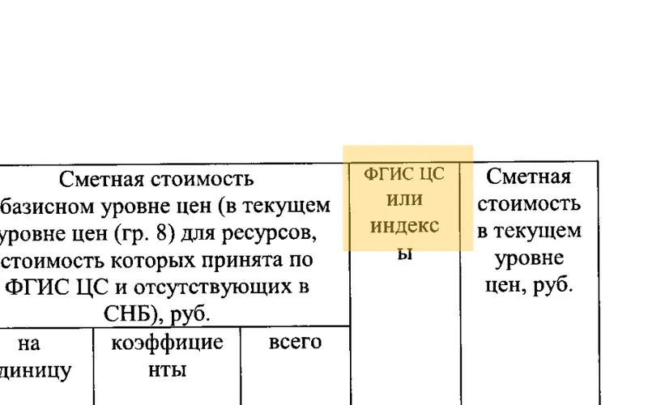
Чужая смета: сверяете графы с формой Методики и видите слабое место
Было
Сводный расчёт, НМЦК и смета контракта — по чужому шаблону.
→
Стало
Собираете сводный сметный расчёт и смету контракта шаг за шагом, рассчитываете и обосновываете НМЦК.
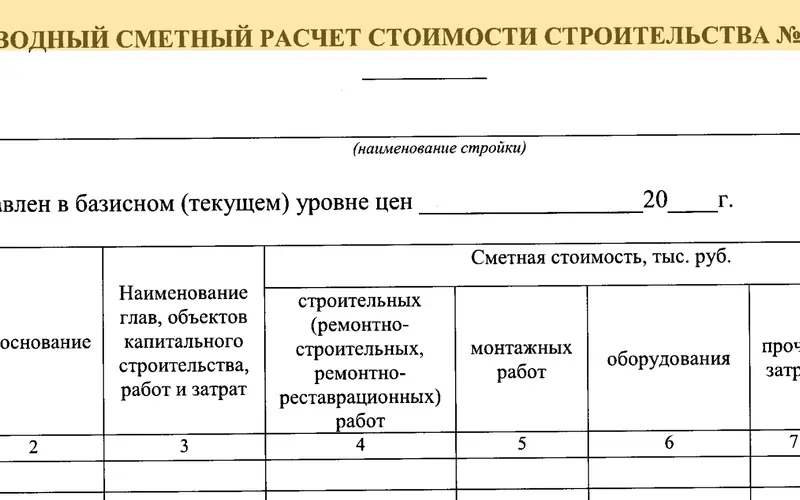
Сводный сметный расчёт — форма из приложения № 6 к Методике № 421/пр
«Не боюсь больше расчетов с НЦС, НМЦК, ССРСС, все в голове разложилось по полочкам.»Выпускник курса повышения квалификации
Результат зависит от вашего опыта и условий работы.
Правила 2026
Разбирайте изменения правил вместе с экспертами
Вы знаете, что изменилось в ценообразовании и где это отражается в вашей смете. Вот что изменилось:
По новым проектам смету считают ресурсно-индексным методом: все регионы перешли на него в начале 2024 года. Прежний метод остался у переходящих объектов и их корректировок.
Минстрой планирует сократить расчёт индексов для прежнего метода: с 2027 года — только по заявленным объектам, с 2030-го — совсем. Пока это проект.
В базе нормативов 2022 года расценок нет — только нормы расхода ресурсов. Цену специалист берёт из государственной системы сам и должен объяснить, откуда она взялась.
Экспертиза проверяет цены и индексы из государственной системы. Метод выбирают один раз, и менять его в ходе экспертизы нельзя.
Смету и ведомость объёмов сдают в машиночитаемом формате, и для ресурсно-индексного метода у Минстроя своя схема.
Считайте по-новому: ресурсно-индексный метод и ФСНБ-2022. Вы составляете смету ресурсно-индексным методом и понимаете, откуда в ней каждая цена: изменения разобраны по модулям, к урокам — презентации экспертов и раздаточный материал.
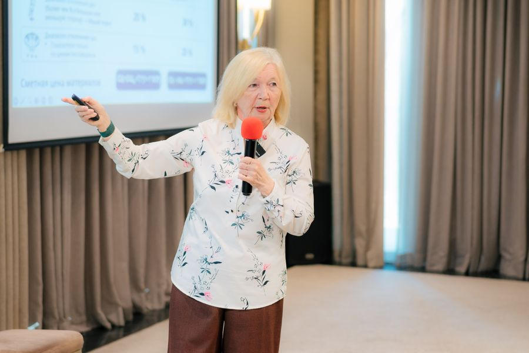
Новые правила — разбираем вместе
Живая встреча Академии, сентябрь 2026: ректор Академии Фирая Валиева ведёт занятие. Изменения не догоняете в одиночку.
«…оказывается многие знания устарели и нуждались в корректировке, тем более что появился РИМ, и помимо прежних методик появились новые методики и новые методы и подходы к определению сметной стоимости..»Выпускник курса повышения квалификации
Честно о записях: у прежних редакций курса часть записей была 2023–2024 годов. Программа 2026 года собрана под действующие документы; при изменениях нормативной базы курс обновляем. Какие модули потока уже открыты, менеджер скажет до оплаты.
Ваша задача
Пять задач — один курс повышения квалификации
С этими вопросами к нам приходят в 2026 году. Программа, куратор и удостоверение — одни для всех; под задачу есть варианты курса.
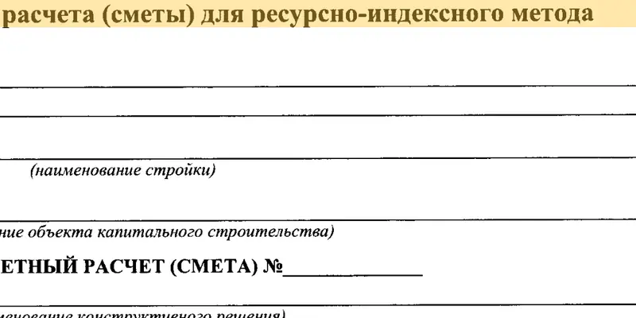
РИМ
Форма локальной сметы для ресурсно-индексного метода — из Методики № 421/пр01
Правила 2026: РИМ, новые накладные расходы и сметная прибыль
Правила изменились, а смета по привычке — по-старому. С ресурсно-индексным методом каждую цену хочется перепроверить: откуда она и устоит ли при проверке.
Вы получите: что изменилось и где это в вашей смете — в первом модуле; ресурсно-индексный метод — досконально: цену из ФГИС ЦС читаете как расчёт и объясняете, откуда она взялась. Практикумы по смете РИМ и перевозке проверяет куратор. Вариант «КПК РИМ».
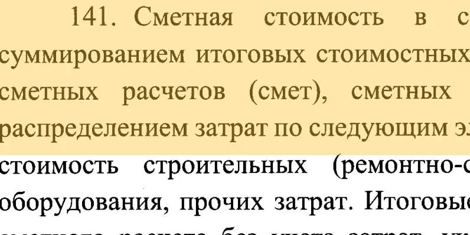
основание
Пункт Методики — его можно показать экспертизе и заказчику02
«На каком основании?»
Экспертиза вернула смету. Заказчик не пропускает коэффициент. Нужен ответ на узкую задачу — перевозка, оборудование, цена контракта.
Вы получите: к каждой норме, цене и коэффициенту — документ и пункт, который можно показать экспертизе и заказчику. Перевозка — модуль 4, оборудование и цена по коммерческим предложениям — модуль 5, коэффициенты — модуль 6, цена контракта — модули 8–9. Практикумы проверяет куратор, пока не останется замечаний.
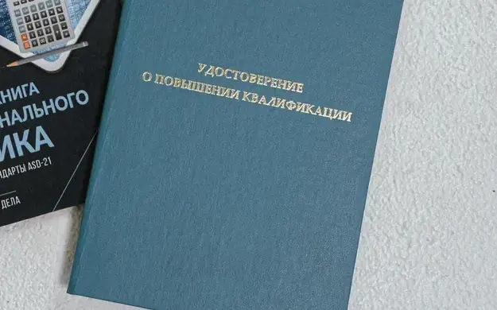
Удостоверение о повышении квалификации — на ваше имя03
Получить удостоверение о повышении квалификации на своё имя
Работодатель просит удостоверение к аттестации, к тендеру, к проверке штата. А повышение квалификации было давно.
Вы получите: удостоверение о повышении квалификации установленного образца на 72 ак. ч. на своё имя после итогового теста, сведения — в ФИС ФРДО. Основные темы профессионального стандарта — по порядку, с практикумами и куратором: знания можно привести в порядок заранее. Профэкзамен: квалификации для специалистов по сметам утверждены, центров, где его сдать, на 2 ноября 2026 года нет. Вариант «КПК Профстандарт».
Вечером дома: практикум в вашей сметной программе04
Нет сметной программы дома
Программа и база — только на работе, а учиться хочется вечером дома.
Вы получите: практикумы — в программе, в которой работаете; нет её дома — скажите менеджеру, подберём вариант для практикумов до оплаты. Методика плюс обучение работе в ГРАНД-Смете — вариант «КПК + ГРАНД-Смета»: запишитесь в лист ожидания, условия назовём, как только откроется набор.
Счёт, договор и письмо руководителю — в день заявки05
Учиться за счёт работодателя
Обучение нужно согласовать с руководителем и провести через бухгалтерию.
Вы получите: счёт и договор — в день заявки и готовое письмо руководителю: курс снижает риск ошибок при составлении и проверке смет, сотрудник учится обосновывать каждую цифру документом. Второй и следующий сотрудник — 19 750 ₽ одним счётом (на КПК РИМ и КПК Профстандарт).
Ваша задача — в другом?
Назовите её в заявке — менеджер покажет модуль и урок, где она разобрана. Если в курсе этого нет, скажем прямо.
«Сделать смету — не проблема, проблема правильно в законодательном поле это всё оформить»Из звонков в Академию
Курс в цифрах
Что внутри курса повышения квалификации
72академических часа — столько в удостоверении
9модулей — от системы цен до сметы контракта
40уроков в записи — более 23 часов видео с экспертами
5практикумов с проверкой куратора
6экспертов Академии ведут модули
Путь цены — так устроена программа
Курс идёт за стоимостью строительства шаг за шагом: от выбора документа до сметы контракта.
1–2Документ и методчто главнее, комплект документации
3–4Цена ресурсаРИМ, ФГИС ЦС на нужную дату2 практикума
5Конъюнктурный анализцена по коммерческим предложениямпрактикум
6Коэффициентыв том числе капремонт и реконструкция
7Сводный расчётглавы 1–12
8НМЦКс индексами инфляции2 практикума
9Смета контрактаи её изменения по 44-ФЗ
номер модулямодуль с практикумом, который проверяет куратор
Схема · одна строка локальной сметы
Работа и объёмнорма ФСНБ-2022 и объём по проекту
Цена ресурсаФГИС ЦС или конъюнктурный анализ
Коэффициенттехчасть сборника или пункт методики
Перевозкарасчёт по схеме доставки
После курса к каждой части строки вы сможете показать основание — документ и пункт.
Что у вас будет после курса
5 практикумов, проверенных куратором
локальная смета ресурсно-индексным методом
перевозка
конъюнктурный анализ
индексы инфляции
расчёт НМЦК
Итоговый тест
80 % верных ответов для зачёта, 10 попыток.
Удостоверение на 72 ак. ч.
На ваше имя, сведения — в ФИС ФРДО.
Что освоите
Шесть тем, на которых держится смета 2026 года
1
Изменения · модуль 1
Главные изменения в ценообразовании
Что изменилось на текущий момент и где это в вашей смете.
2
Метод · модули 3–4
РИМ — досконально
Локальная смета ресурсно-индексным методом с ценами ФГИС ЦС на нужную дату и перевозкой — каждую строку объясняете.
3
Обоснование цены · модуль 5
Конъюнктурный анализ
Цена ресурса подтверждена коммерческими предложениями — её проще отстоять при проверке.
4
Коэффициенты · модуль 6
Повышающие и понижающие коэффициенты
В том числе при капремонте и реконструкции: каждый подтверждён документом — спокойно объясняете его эксперту.
5
Расчёт · модуль 7
Сводный сметный расчёт
Главы 1–12: каждая строка опирается на документ, а не на старый расчёт.
6
Закупки и контракт · модули 8–9
НМЦК и смета контракта
Расчёт НМЦК с индексами инфляции и изменения сметы контракта в случаях, допускаемых 44-ФЗ: каждая цифра НМЦК — с основанием, такую НМЦК проще защитить перед заказчиком и контролем.
Главный навык, который тренирует курс: обосновать каждую цифру сметы документом — норму шифром ФСНБ и объёмом по проекту, цену — ФГИС ЦС или конъюнктурным анализом, коэффициент — техчастью сборника или пунктом методики.
Программа
9 модулей — путь стоимости от системы ценообразования до сметы контракта
Модуль 1
Система ценообразования и этапы определения стоимости
Уверенно выбираете действующий нормативный документ и понимаете, какой главнее.
Фирая Валиеваректор Академии
Модуль 2
Состав сметной документации
Корректно собираете комплект: метод, уровень цен, пояснительная записка, ВОР — документы реже возвращают.
Инна Митрофанова, Анна Воронцова
Модуль 3
Нормативная база РИМ
Обоснованно читаете сметную цену труда, машин и материалов, накладные расходы и сметную прибыль.
Фирая Валиева, Тамара Киселёва
Модуль 4
Ресурсно-индексный метод
Корректно считаете локальную смету РИМ с ценами ФГИС ЦС на нужную дату и перевозкой. Практикумы: смета РИМ и перевозка.
Обоснованно применяете коэффициенты, в том числе при капремонте и реконструкции.
Людмила Дьяченко, Анна Воронцова
Модуль 7
Сводный сметный расчёт
Обоснованно собираете сводный сметный расчёт по главам 1–12.
Инна Митрофанова
Модуль 8
НМЦК
Корректно рассчитываете начальную (максимальную) цену контракта с индексами инфляции. Практикумы: индексы инфляции и расчёт НМЦК.
Светлана Притчина
Модуль 9
Смета контракта
Корректно составляете смету контракта и вносите в неё изменения в случаях, допускаемых 44-ФЗ.
Светлана Притчина
Заключительные модули открываются по графику потока — график назовём до оплаты. Программа 2026 года; курс обновляем при изменениях нормативной базы и выходе новых нормативных документов.
Ваша задача — в каком модуле?Назовите её в заявке: менеджер покажет модуль и урок и назовёт график потока.
Задания близки к рабочим ситуациям: расчёт по документам
▶40 уроков в записи
Более 23 часов видео с экспертами: длинные уроки разбиты на части. К урокам — тесты и письменные задания, близкие к реальным рабочим ситуациям, и 5 практикумов с проверкой куратора.
Знания по полочкам: каждая тема на своём месте
≡Знания по полочкам
Идёте от модуля к модулю по порядку: следующий модуль открывается, когда пройдены уроки и сданы задания. Вся информация — в одном месте, пробелы закрываются.
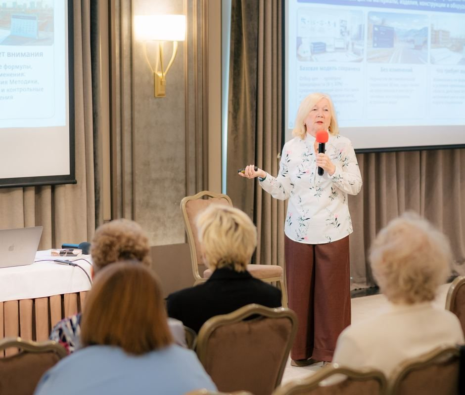
Живая встреча Академии, сентябрь 2026: вопросы — экспертам
?Встречи с экспертами — 2 раза в месяц
Онлайн: приносите вопрос из своей сметы и разбираете его с экспертами Академии. Запись остаётся в личном кабинете.
Тема появилась в работе — открыли урок, записали нужный пункт
↻Возвращайтесь к урокам в работе
Уроки, презентации экспертов и раздаточный материал — в личном кабинете, пока открыт доступ, 6 месяцев: нужную тему открываете, когда она появляется в работе.
«Курс дал хорошую практическую базу — особенно ценно, что задания приближены к реальным рабочим ситуациям.»
Выпускник курса повышения квалификации
«Все уроки ведутся на понятном языке с акцентом на главные моменты. Модули связаны между собой. После изучения курса все мои знания упорядочились и разложились по полочкам.»
Выпускник курса повышения квалификации
«Мне понравились подробные презентации к урокам. Я их скачала и за 5-10 минут рассчитываю вспомнить детали этой темы.»
Выпускник курса повышения квалификации
Эксперт показывает расчёт — вы повторяете
«Я следовал за Вами и получил тот же результат копейка в копейку» — написал ученик потока 2026 года под уроком.
Кто рядом
Учитесь у практиков, которые работают в сметном деле
«Так же могу отметить лекторов, которые расщепляли материал методичек … своими примерами из жизни или логическим разбором.»Выпускник курса повышения квалификации
Нормативный текст разбирают 6 экспертов Академии, которые сами работают в сметном деле: на примерах, по логике, простым языком. Среди них — ректор Академии и руководитель Экспертного совета. Под портретом — модули, которые ведёт эксперт.
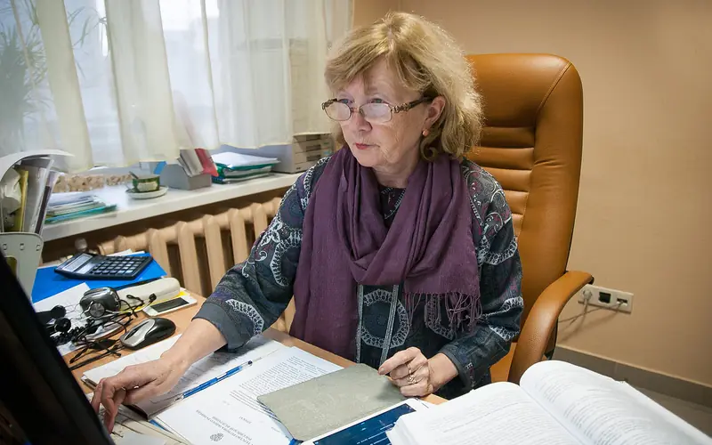
Фирая Валиева, ректор Академии, за сметной документацией: эксперты курса сами работают в сметном деле
Фирая Валиева
ректор Академии
13
Людмила Дьяченко
эксперт Академии
46
Светлана Притчина
эксперт Академии
89
Инна Митрофанова
руководитель Экспертного совета
2457
Анна Воронцова
эксперт Академии
26
Тамара Киселёва
эксперт Академии
3
Получайте разбор ваших работ от куратора
Куратор Академии — практикующий специалист сметного дела — разбирает ваши 5 практикумов письменно: что верно, что доработать и на какой документ опереться, пока не останется замечаний. Он направляет, а решение находите вы — и навык остаётся у вас.
«Куратор всегда был на связи и отвечал на все-все вопросы.»Выпускник курса повышения квалификации
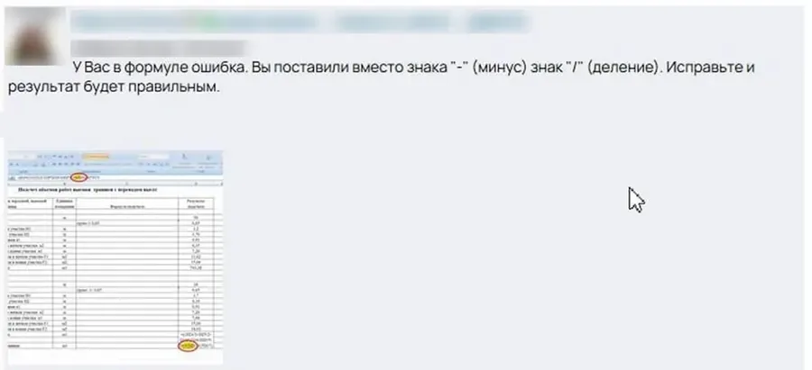
Ответ куратора к практикуму: где ошибка и как исправить (имена скрыты)
Эксперты Академии на Живой встрече, сентябрь 2026
Фирая Валиева ведёт занятие
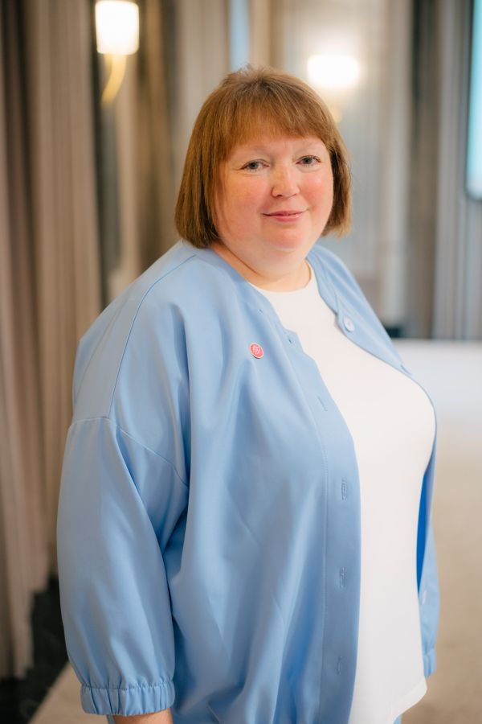
Инна Митрофанова
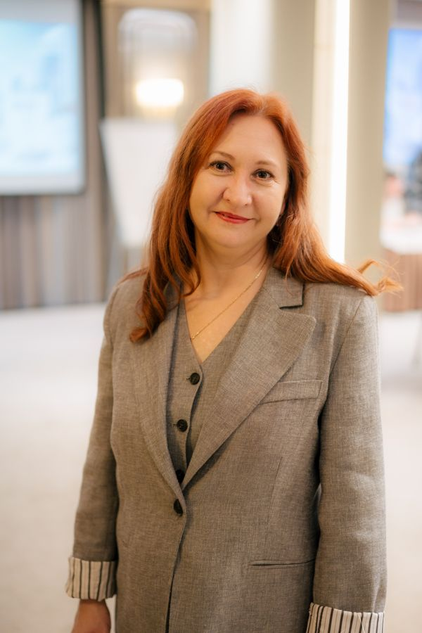
Светлана Притчина
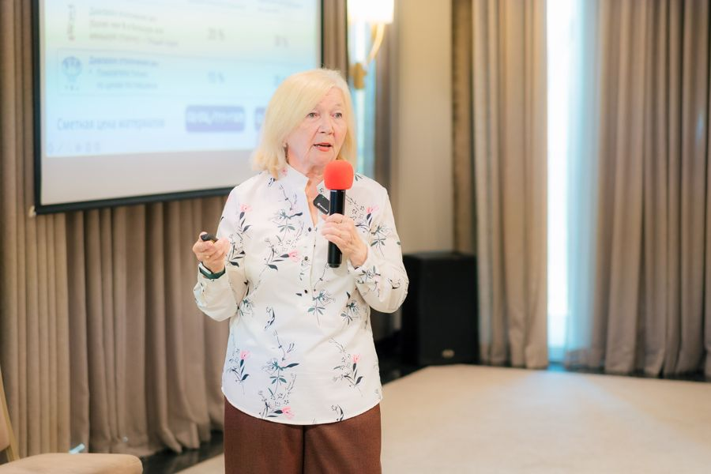
Фирая Валиева
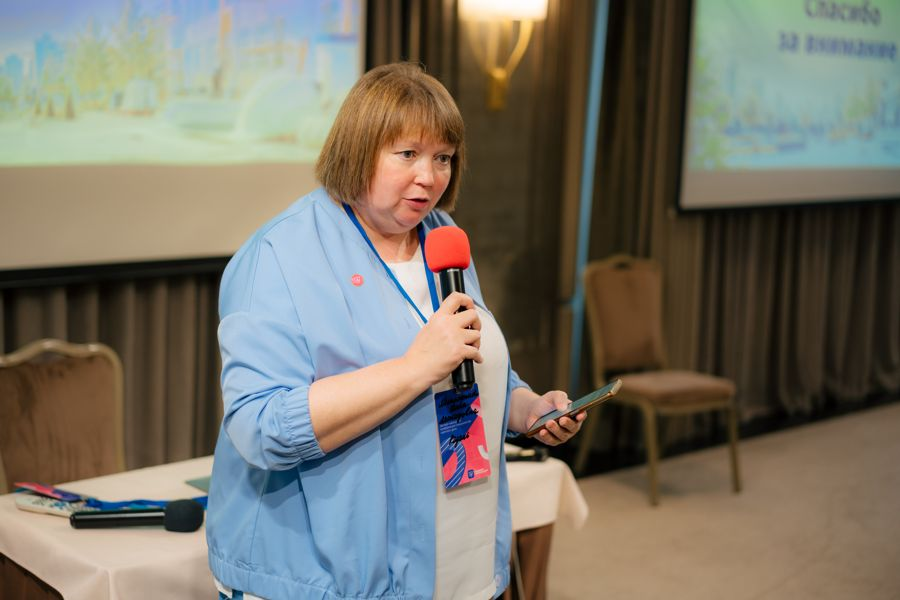
Инна Митрофанова выступает
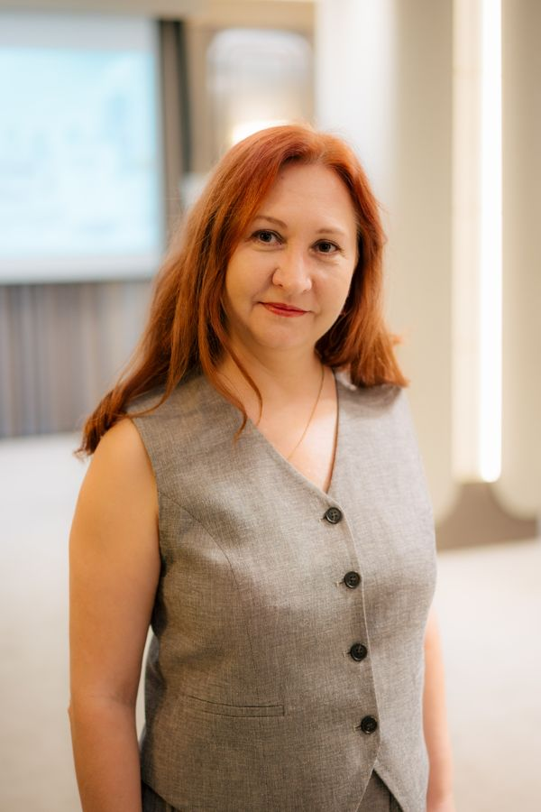
Светлана Притчина
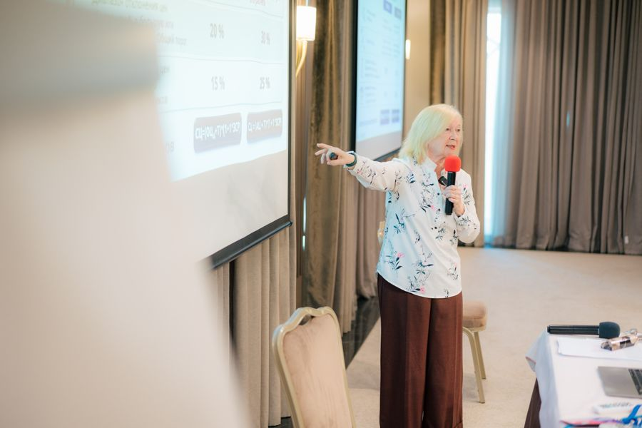
Фирая Валиева
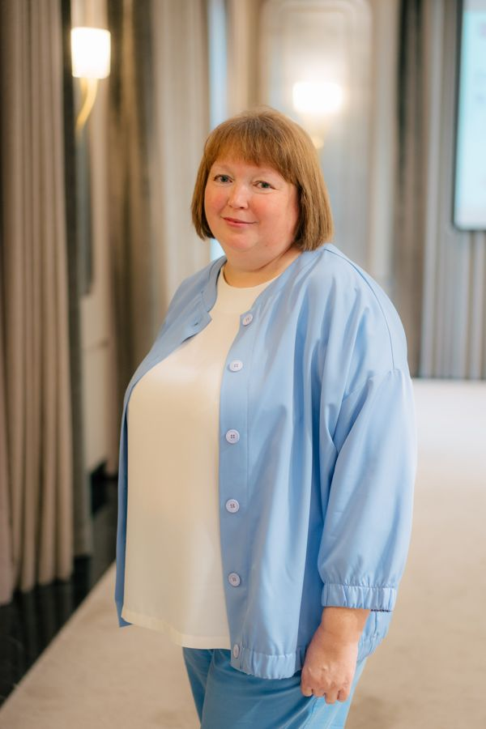
Инна Митрофанова
Листайте вправо →
Путь ученика
От заявки до удостоверения
ЗаявкаВам позвонят из Академии, уточнят задачу и помогут выбрать оплату.
Первые уроки — сразуПосле оплаты: загрузите диплом и заполните анкету для удостоверения.
Старт 1-го числаМодули по порядку, чат потока, куратор знакомится с учениками.
Практикумы и встречи5 практикумов с разбором куратора, встречи с экспертами 2 раза в месяц.
Итоговый тест и удостоверение100 вопросов, 80 % для зачёта, 10 попыток. Удостоверение — примерно через 2 недели.
Сколько времени займёт
≈ 40 мин
средняя длина урока в записи; длинные уроки разбиты на части
6 мес
открыты материалы — проходите в своём темпе
3 мес
куратор на связи и разбирает ваши практикумы
Уроки в записи, средняя длина около 40 минут; проходите в своём темпе: материалы открыты полгода, куратор на связи 3 месяца.
Готовы начать?Заявка — это разговор, а не оплата: вам позвонят из Академии.
Вы получаете удостоверение о повышении квалификации на своё имя и знания, которые применяете в работе, а не только документ. Уроки и материалы под рукой, пока открыт доступ.
«после прохождения курса получила большое количество новых знаний, теперь буду применять на практике.»Выпускник курса повышения квалификации
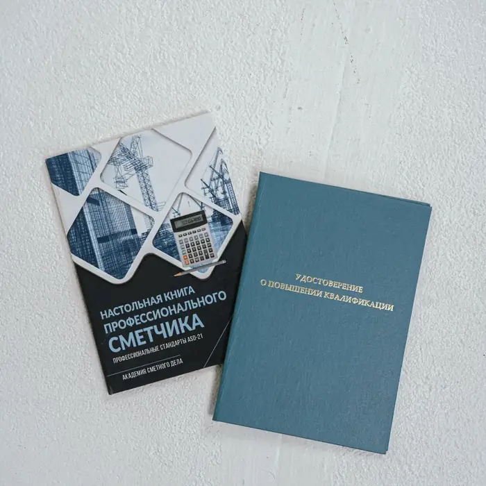
Удостоверение о повышении квалификации — на ваше имя
Удостоверение о повышении квалификации установленного образца на 72 академических часа — на ваше имя, после практикумов и итогового теста.
Сведения вносятся в ФИС ФРДО — федеральный реестр документов об образовании.
Выдаём примерно через 2 недели после итогового теста — электронно и Почтой России.
Обучение проводит АНО ДПО «Центр образования и консультирования» (Академия сметного дела) по лицензии на образовательную деятельность № Л035-01272-16/00371642 от 25.01.2019, выдана Министерством образования и науки Республики Татарстан. Проверить можно в реестре лицензий Рособрнадзора.
Для обучения нужно среднее профессиональное или высшее образование (или вы получаете его сейчас).
Что говорят выпускники
К нам приходят за порядком в знаниях и уверенностью в своих сметах
83 %ответивших выпускников прежних редакций готовы рекомендовать курс коллегам — 368 из 441
≈ 90ответов — о знаниях по полочкам: собрались в систему, закрылись пробелы
≈ 70ответов — об уверенности в своих расчётах
По итоговым анкетам выпускников прежних редакций программы, 441 ответ. Чаще всего выпускники пишут об уверенности и о том, что знания собрались в систему; многие — что к ним стали обращаться коллеги за разъяснениями.
«Сейчас, благодаря АСД, я чувствую себя уверенно в этом громадном океане по названию "Сметное дело"»
Выпускник курса повышения квалификации
«…благодаря более систематизированной системе знаний, всегда знаешь, где искать ответ на тот или иной вопрос.»
Выпускник курса повышения квалификации
«Появилась уверенность в знаниях и работе. … Понимание нормативной документации. Нет страха перед всеми новыми обновлениями в сметной работе.»
Выпускник курса повышения квалификации
«Ко мне за советом обращаются старшие коллеги и ... подрядчики!»
Выпускник курса повышения квалификации
«Формат обучения максимально удобный! Советую всем проходить.»
Выпускник курса повышения квалификации
«Прекрасный курс, прекрасные преподаватели, я не представляю дальнейшей жизни инженером сметчиком без академии.»
Выпускник курса повышения квалификации
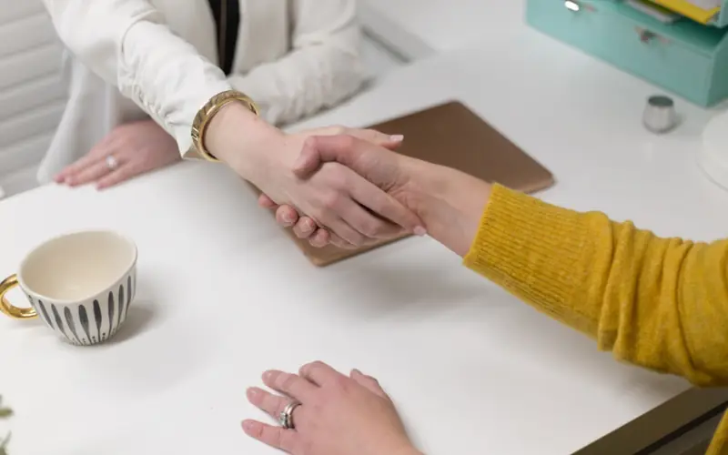
Разговор о росте — с обновлёнными знаниями
«Стала главным специалистом СДО»
Выпускник курса повышения квалификации · личный результат выпускника, у каждого свой
Дополнительный проект по смете — если решите
«Работаю в офисе, плюс беру доп работу на просчет смет»
Выпускник курса повышения квалификации · личный результат выпускника, у каждого свой
Цитаты из итоговых анкет — дословно, с разрешения авторов поделиться достижениями; сокращения отмечены многоточием.
Отзывы и фото ниже публикуем с письменного согласия авторов. Результат у каждого свой: он зависит от опыта и условий работы.
«В результате полученных знаний и навыков за год работы в организации меня повысили в должности.»
Видеоотзыв, сентябрь 2026 · курс повышения квалификации, прежняя редакция программы · личный результат
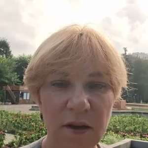
Анжелика Каныгинаинженер по проектно-сметной работе, Екатеринбург
«Спустя пять лет я снова вернулась в Академию сметного дела… поняла, что засиделась… и появились опять же пробелы в знаниях.»
Видеоотзыв, июль 2026 · курс повышения квалификации и Годовая система, прежняя редакция программы
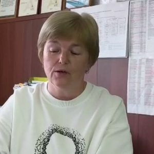
Ирина ЛушинаУльяновск
«…узнала новое в составлении смет, расчёте перевозок, формировании сводного сметного расчёта, НМЦК.»
Видеоотзыв, сентябрь 2026 · курс повышения квалификации
Анастасия СаидоваЧелябинск
«Во время прохождения курса и выполнения различных занятий я получала обратную отдачу от куратора.»
Видеоотзыв, сентябрь 2026 · курс повышения квалификации
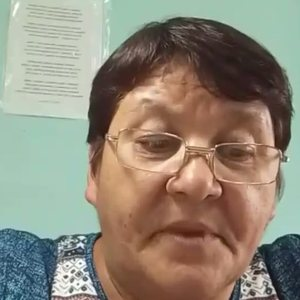
Альфия БикмееваБашкортостан
«…В результате я повысила свою квалификацию и самооценку приобрела в защите своих смет.»
Видеоотзыв, август 2026 · выпускница Академии · личный результат
ИЕ
Ирина Евстратоваруководитель сметного отдела, Новокузнецк
«С АСД я знакома с 2015 г., но только на вебинарах присутствовала. За последние три года произошло много изменений и повышение квалификации неизбежно…»
Письменный отзыв, июнь 2026 · курс повышения квалификации, прежняя редакция программы
МЛ
Мария Лебедеваинженер-сметчик, Пермь
«Прошла обучение… справлялась с заданиями с помощью куратора и самостоятельно, как получалось.»
Видеоотзыв, июль 2026 · курс повышения квалификации «Переход», прежняя редакция программы
Более 10 000человек оплатили обучение в Академии***
Лицензия ДПОбессрочная, с 2019 года
Хотите так же уверенно защищать свои сметы?Оставьте заявку — вам позвонят из Академии и ответят на вопросы. Это разговор, а не оплата.
Объект организации: сметы составлены и проверены по документу
Сметы — по документу
Сотрудник учится составлять и проверять сметы по документу — так снижается риск ошибок в расчётах организации.
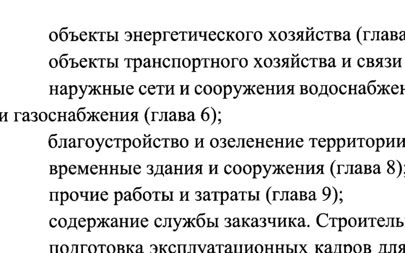
Главы сводного сметного расчёта по пункту 138 Методики — модуль 7
Новое направление
Подтягиваете специалиста под сводный расчёт, НМЦК и смету контракта: модули 7–9 и практикумы с проверкой куратора.
Сметы подрядчиков и проектировщиков: слабые места — со ссылкой на документ
Проверка чужих смет
Сотрудник видит слабые места в сметах проектировщиков и подрядчиков и называет их со ссылкой на документ.
«Руководство оценило такую инициативу к обучению. Чувствую себя более грамотным и уверенным специалистом.»
Выпускник курса повышения квалификации
«Сейчас шеф получает необходимую информацию от меня.»
Выпускник курса повышения квалификации
«Я являюсь заместителем руководителя учреждения, который курирует вопросы капстроительства, это и побудило … пройти обучение по сметному делу, особенно учитывая изменения законодательста в этом направлении.»
Выпускник курса повышения квалификации
Счёт и договор — в день заявкиГотовое письмо руководителю, удостоверение — каждому на его имя. Второй и следующий сотрудник — 19 750 ₽ одним счётом (на КПК РИМ и КПК Профстандарт).
Один курс повышения квалификации — варианты под вашу задачу
Программа, эксперты, куратор и удостоверение у всех вариантов одни. Разное — на чём акцент (ресурсно-индексный метод или темы профессионального стандарта), а в варианте с ГРАНД-Сметой добавлен второй курс. Не знаете, какой выбрать, — менеджер подскажет по трём вопросам.
У всех вариантов:72 ак. ч.9 модулей, 40 уроков5 практикумов с куратором6 экспертовудостоверение на своё имя
Перешли на ресурсно-индексный метод
КПК РИМ
Ресурсно-индексный метод по шагам: каждую цену в смете вы объясняете документом.
Программа и удостоверение одни, разный набор под задачу: здесь в фокусе ресурсно-индексный метод — нормативная база РИМ, локальная смета, конъюнктурный анализ, коэффициенты (модули 3–6)
В фокусе 3 практикума из 5: локальная смета с ценами ФГИС ЦС на нужную дату, перевозка, конъюнктурный анализ — куратор проверяет, пока не останется замечаний
Удостоверение о повышении квалификации: «Ценообразование и сметное нормирование в строительстве», 72 ак. ч.
39 500 ₽как у курса повышения квалификации · продажи варианта — с 10 ноября; старт обучения — 1-го числа каждого месяца
Методика плюс обучение работе в ГРАНД-Смете: знаете основание каждой цифры и как это сделать в программе.
Курс повышения квалификации на 72 ак. ч.
Курс «Гранд-Смета от А до Я»: 22 урока от создания объекта до КС-2 и 19 мастер-классов экспертов Академии, сертификат Академии на 28 ак. ч.
Вариант программы для практикумов подберём до оплаты
Запись бесплатная и ни к чему не обязывает: напишем, когда откроем набор. В заявке укажите «КПК + ГРАНД-Смета». По курсу «Гранд-Смета от А до Я» — сертификат Академии.
Удостоверение о повышении квалификации: «Ценообразование и сметное нормирование в строительстве», 72 ак. ч.
Лист ожиданияОткроем запись после подтверждения программы для практикумов
Решить спокойно:заявка — разговор, а не оплата5 дней пробного доступакуратор — пока не останется замечанийлицензию проверите в реестре Рособрнадзорасведения об удостоверении — в ФИС ФРДО
КПК РИМ и КПК Профстандарт
39 500 ₽
Можно оплатить в рассрочку — это кредит АО «ТБанк»*. Условия — на странице оплаты. Оценивайте свои финансовые возможности и риски.
Навык верно составлять и проверять сметы: к каждой норме, цене и коэффициенту — документ и пункт
9 модулей, 40 уроков, задание к каждому
5 практикумов с индивидуальным сопровождением куратора
6 экспертов и встречи с ними 2 раза в месяц
Удостоверение на 72 ак. ч., сведения в ФИС ФРДО
Старт 1-го числа, первые уроки — сразу после оплаты
Откроется страница Академии с программами. Карточка «Курс повышения квалификации» выделена — нажмите на ней «Оставить заявку». Это заявка, не оплата: вам позвонят и ответят на вопросы.
Цены на ноябрь 2026 года. Цены меняются — актуальная цена на странице оплаты.
5 дней — бесплатно
Начните учиться бесплатно: 5 дней пробного доступа — посмотрите уроки и решите сами. Напишите об этом в заявке — менеджер скажет, что откроется.
35 550 ₽ — выпускникам Академии
Тем, кто окончил у нас Курс начинающего сметчика, курс повышения квалификации или Годовую систему: −10 % на КПК РИМ и КПК Профстандарт. Для варианта с ГРАНД-Сметой условия назовёт менеджер.
Платит организация
Счёт и договор — в день заявки, для руководителя — готовое письмо о курсе. Второй и следующий сотрудник — 19 750 ₽ одним счётом на КПК РИМ и КПК Профстандарт (со скидкой выпускника не суммируется); для варианта с ГРАНД-Сметой условия назовёт менеджер.
Налоговый вычет до 13 %
Если оплачиваете сами и платите НДФЛ, можно вернуть до 13 % стоимости обучения социальным налоговым вычетом**.
КПК + ГРАНД-Смета
Два курса в одном пакете — лист ожидания: откроем запись после подтверждения программы для практикумов. Подробнее о вариантах.
Что выбрать
Какая программа Академии вам подходит
Курс начинающего сметчикапрофессия с нуля
Курс повышения квалификацииуже работаете со сметами · вы здесь
Высотка для опытныхудостоверение и поддержка весь год
Курс начинающего сметчика
Начинаете профессию с нуля
Профессия с нуля и диплом о профессиональной переподготовке.
Эта страница
Курс повышения квалификации
Уже работаете со сметами — хватит и 6–8 месяцев практики
Правила 2026 года, обоснование каждой цифры и удостоверение на своё имя.
Высотка для опытных
Нужны удостоверение и поддержка весь год
Курс повышения квалификации 2 раза за год и Годовая система «Элита» на 12 месяцев: за спиной — Экспертный совет Академии.
Курс начинающего сметчика — ваш автомобиль. Курс повышения квалификации — умение хорошо водить машину: вы уверенно ведёте смету и знаете, почему поворачиваете именно так.
Нужно научиться работать в самой сметной программе — для этого есть курс «Гранд-Смета от А до Я». Курс повышения квалификации — о методике.
Вопросы
Частые вопросы
У меня большой стаж. Что нового я узнаю?
Курс рассчитан на практикующих специалистов: профессии с нуля здесь не учат. Первый модуль — обзор изменений нормативной базы: что поменялось и где это в вашей смете. Знакомые темы станут опорой для новых, а куратор на практикуме увидит, где пробел.
Ведущий инженер-сметчик с 23 годами опыта, которая училась по прежней редакции программы, написала нам: «После изучения курса все мои знания упорядочились и разложились по полочкам».
Чем отличаются варианты курса?
Курс, эксперты, куратор и удостоверение у всех вариантов одни: «Ценообразование и сметное нормирование в строительстве», 72 ак. ч. Разное — на чём акцент: ресурсно-индексный метод или темы профессионального стандарта; в варианте с ГРАНД-Сметой добавлен второй курс. Не знаете, какой выбрать, — менеджер подскажет.
Это курс для начинающих?
Нет. Это курс не про то, что такое смета, а про то, на каком основании стоит каждая цифра: норма, цена, коэффициент — документ и пункт. Он для тех, кто уже составляет или проверяет сметы; хватит и 6–8 месяцев практики.
Я проверяю чужие сметы, а не составляю. Мне подойдёт?
Да. Курс идёт по пути цены — от выбора документа до сметы контракта. Вы видите, на каком основании строится каждая цифра, и знаете, где искать слабое место в чужой смете. Модули про НМЦК и смету контракта — как раз сторона заказчика.
Кто проверяет практикумы? А если вернут на доработку?
Практикумы проверяет куратор Академии — практикующий специалист сметного дела, а не тест и не робот. Разбор письменный: что верно, что доработать и на какой документ опереться. Куратор направляет, а решение находите вы — так навык остаётся у вас.
Возврат на доработку — не отсев: цель, чтобы вы довели расчёт до конца и могли его защитить. Куратор на связи 3 месяца: за это время проверяет, пока не останется замечаний, и помогает обосновать свою позицию.
Нет времени. Сколько нужно заниматься?
Уроки в записи, средняя длина около 40 минут, длинные разбиты на части, к каждому — задание. Проходите в своём темпе: материалы открыты полгода, куратор на связи 3 месяца.
Удостоверение нужно к аттестации. Как его получить?
Пройдите модули и практикумы, затем сдайте итоговый тест — он открывается, когда пройдены все модули потока; график заключительных модулей менеджер назовёт до оплаты. Удостоверение выдаём примерно через 2 недели после теста — электронно и Почтой России, сведения вносятся в ФИС ФРДО.
Документ официальный? Сведения внесут в ФИС ФРДО?
Удостоверение о повышении квалификации установленного образца на 72 академических часа на ваше имя; сведения вносятся в ФИС ФРДО. Обучение проводит АНО ДПО «Центр образования и консультирования» по лицензии № Л035-01272-16/00371642 — её можно проверить в реестре Рособрнадзора.
Требования аттестационных комиссий разные, поэтому за комиссию мы не ручаемся: пришлём программу с часами по модулям и копию лицензии — сверьте их с вашим требованием.
Всё это есть бесплатно — зачем курс?
Быть в курсе можно бесплатно: методики открыты, вебинары Академии тоже. Знать, как применить изменение в своей смете и защитить цифру, — другое. Бесплатно не получить проверки практикумов куратором и удостоверения.
Ирина Евстратова, руководитель сметного отдела из Новокузнецка, с 2015 года была с Академией на вебинарах — и пришла на курс: «За последние три года произошло много изменений и повышение квалификации неизбежно…»
Записи не устарели?
Про прежние редакции выпускники пишут справедливо: часть записей была 2023–2024 годов. Программа 2026 года собрана под действующие документы; при изменениях нормативной базы курс обновляем. Какие модули потока уже открыты и когда выходят остальные, менеджер скажет до оплаты.
Будет ли практика?
Да. К урокам — тесты и письменные задания, близкие к реальным рабочим ситуациям, и 5 практикумов, которые разбирает куратор. Сложный случай из своей сметы приносите на встречу с экспертами — 2 раза в месяц.
Мне нужен только документ.
Удостоверение о повышении квалификации на ваше имя вы получаете после итогового теста — и вместе с ним знания, которые применяете в работе. Выпускники чаще всего пишут именно об этом: уверенность и знания по полочкам.
А если на работе ничего не изменится?
Курс не гарантирует изменений в должности или доходе. Он даёт знания, практикумы с разбором куратора и удостоверение на ваше имя; как их применить, решаете вы.
Нужно ли удостоверение для национального реестра специалистов?
С 1 сентября 2026 года инженер-сметчик есть в перечне должностей национальных реестров специалистов. Закон специалиста сметного дела не обязывает; требования могут появиться в правилах саморегулирования для организаций — членов СРО, проект таких правил на 2 ноября 2026 года не утверждён. Курс — ваше обновление знаний и удостоверение на своё имя; включение в реестр Академия не обещает.
У меня своя специфика — сети, электрика.
Порядок расчёта стоимости одинаков для любых работ; отличаются сборники норм и нормативы накладных расходов и сметной прибыли по видам работ. Курс — об этом общем порядке. Под свою отрасль — спецкурсы Академии.
Дадут сметную программу? В чём делать практикумы?
Курс — о методике, а не о кнопках. Практикумы выполняете в сметной программе, в которой работаете. Если своей программы дома нет — скажите менеджеру, подберём вариант для практикумов до оплаты. Работе в самой программе учит курс «Гранд-Смета от А до Я».
А если не сдам итоговый тест с первого раза?
На итоговый тест — 10 попыток, для зачёта нужно 80 % верных ответов. Вопрос по заданию можно задать в чате потока — куратор поможет разобраться.
Рассрочка — это кредит?
Да, рассрочку оформляет АО «ТБанк» — это кредит банка. Срок, полную стоимость кредита и сумму платежей банк показывает на странице оплаты — прочитайте их до оформления. Оценивайте свои финансовые возможности и риски. Не хотите с банком — оплатите сразу картой или по реквизитам.
Платит организация. Какие документы пришлёте?
Одним письмом: проект договора, счёт, копию лицензии, программу с часами по модулям и готовое письмо руководителю. Второй и следующий сотрудник одной организации — 19 750 ₽ одним счётом; удостоверение — каждому на его имя.
Не нашли ответ?Напишите вопрос в заявке — менеджер перезвонит и ответит.
Эльза Насыровакурс повышения квалификации, прежняя редакция
«У меня опыт небольшой, всего 3 года. И для меня эта информация очень важна.»
Инна Гзудуневскаякурс повышения квалификации, 2026
«Я следовал за Вами и получил тот же результат копейка в копейку, мне нравится как вы доходчиво рассказываете спасибо большое, узнаю много нового для себя.»
Влад Курбатовкурс повышения квалификации, 2026 · комментарий к уроку
«Многое было уже знакомо, но и новое для себя взяла, усвоила, ближе познакомилась с ГК РФ и с другими нормативными документами, приказами. Методика № 421 мой настольный документ.»
Ирина Евстратоваруководитель сметного отдела · курс повышения квалификации, прежняя редакция
«Впервые сталкиваюсь и с РИМ, и с ФГИС ЦС. Отличный формат ознакомления с ФГИС ЦС, целая виртуальная экскурсия.»
Оксана Есиповакурс повышения квалификации, 2026 · комментарий к уроку
«…узнала новое в составлении смет, расчёте перевозок, формировании сводного сметного расчёта, НМЦК.»
Ирина Лушинакурс повышения квалификации, видеоотзыв, сентябрь 2026
«всегда с удовольствием прохожу курсы повышения квалификации в АСД и рекомендую своим коллегам»
Елена Андреевна Поляковакурс повышения квалификации, 2026
Эльза Насыровакурс повышения квалификации, прежняя редакция
«У меня опыт небольшой, всего 3 года. И для меня эта информация очень важна.»
Инна Гзудуневскаякурс повышения квалификации, 2026
«Я следовал за Вами и получил тот же результат копейка в копейку, мне нравится как вы доходчиво рассказываете спасибо большое, узнаю много нового для себя.»
Влад Курбатовкурс повышения квалификации, 2026 · комментарий к уроку
«Многое было уже знакомо, но и новое для себя взяла, усвоила, ближе познакомилась с ГК РФ и с другими нормативными документами, приказами. Методика № 421 мой настольный документ.»
Ирина Евстратоваруководитель сметного отдела · курс повышения квалификации, прежняя редакция
«Впервые сталкиваюсь и с РИМ, и с ФГИС ЦС. Отличный формат ознакомления с ФГИС ЦС, целая виртуальная экскурсия.»
Оксана Есиповакурс повышения квалификации, 2026 · комментарий к уроку
«…узнала новое в составлении смет, расчёте перевозок, формировании сводного сметного расчёта, НМЦК.»
Ирина Лушинакурс повышения квалификации, видеоотзыв, сентябрь 2026
«всегда с удовольствием прохожу курсы повышения квалификации в АСД и рекомендую своим коллегам»
Елена Андреевна Поляковакурс повышения квалификации, 2026
«Больше всего для меня были важны уроки именно знание сметчика подрядной организации.»
Анжелика Каныгинакурс повышения квалификации и Годовая система, прежняя редакция
«Во время прохождения курса и выполнения различных занятий я получала обратную отдачу от куратора.»
Анастасия Саидовакурс повышения квалификации, видеоотзыв, сентябрь 2026
«Очень понравился модуль про сводный сметный расчёт, когда мы делали очень много практики, про временные здания и сооружения, про зимнее удорожание.»
Виктория КиркинаКурс начинающего сметчика, Годовая система и курс повышения квалификации
«спасибо, заполнила небольшие пробелы по нормативке»
Елена Анненкокурс повышения квалификации, 2026
«…В результате я повысила свою квалификацию и самооценку приобрела в защите своих смет.»
Альфия Бикмеевавыпускница Академии, видеоотзыв, август 2026
«Очень сжато и конкретно подан материал»
Наталья Бутусовакурс повышения квалификации, 2026
«Прошла обучение… справлялась с заданиями с помощью куратора и самостоятельно, как получалось.»
Мария Лебедевакурс повышения квалификации «Переход», прежняя редакция
«Больше всего для меня были важны уроки именно знание сметчика подрядной организации.»
Анжелика Каныгинакурс повышения квалификации и Годовая система, прежняя редакция
«Во время прохождения курса и выполнения различных занятий я получала обратную отдачу от куратора.»
Анастасия Саидовакурс повышения квалификации, видеоотзыв, сентябрь 2026
«Очень понравился модуль про сводный сметный расчёт, когда мы делали очень много практики, про временные здания и сооружения, про зимнее удорожание.»
Виктория КиркинаКурс начинающего сметчика, Годовая система и курс повышения квалификации
«спасибо, заполнила небольшие пробелы по нормативке»
Елена Анненкокурс повышения квалификации, 2026
«…В результате я повысила свою квалификацию и самооценку приобрела в защите своих смет.»
Альфия Бикмеевавыпускница Академии, видеоотзыв, август 2026
«Очень сжато и конкретно подан материал»
Наталья Бутусовакурс повышения квалификации, 2026
«Прошла обучение… справлялась с заданиями с помощью куратора и самостоятельно, как получалось.»
Мария Лебедевакурс повышения квалификации «Переход», прежняя редакция
Отзывы — дословно из личного кабинета, комментариев к урокам и видеоотзывов. Публикуем с письменного согласия авторов. «Прежняя редакция» — автор учился по программе до обновления 2026 года.
Снизьте риск ошибок в своих сметах — оставьте заявку
Вам позвонят из Академии: ответим на вопросы, покажем модуль под вашу задачу и поможем выбрать оплату. Заявка — это разговор, а не оплата.